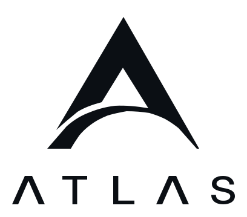

Welcome back
Sign in to continue.
Set up two-factor sign-in
Atlas now requires an authenticator app to sign in. Set it up once to continue.

Sign in to continue.
Atlas now requires an authenticator app to sign in. Set it up once to continue.